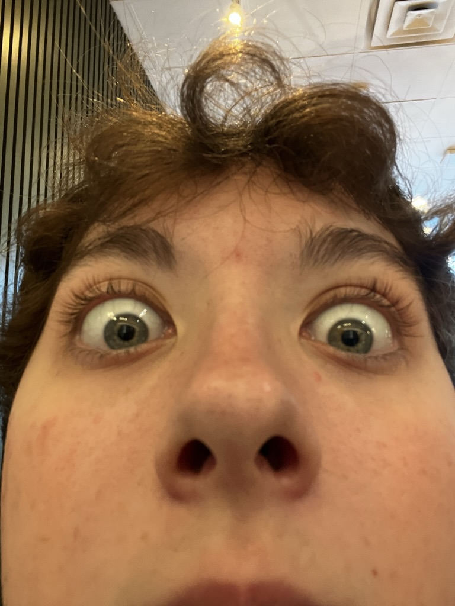

My name's Antonio Ramos, I'm a Puerto Rican from Houston, Texas and I graduated in the top one percent of my class as Summa Cum Laude from Clear Springs High School in the Spring of 2021. Currently, I'm a junior pursuing a major in computer science and a minor in Spanish at the University of Texas at Austin. Moreover, I'm actively working with the Austin non-profit Senior Access as a website and database engineer.
| Name | Status | Version |
|---|---|---|
| My Website | Release | 1.0 |
| Discord Bot Framework | Pre-Alpha | - |
| Donor Information Executable | Release | 1.0 |